2
▲3
▶
2
▲3
▶
物語が全部気のせいで進む『 気のせいすぎるＲＰＧ 』が笑える
キヨ。 · 768,688再生 · 公開 11/16
2
▲3
▶
キヨ。 · 768,688再生 · 公開 11/16
 4
▼1
▶
4
▼1
▶
ドラゴンクエストウォーク公式 · 164,472再生 · 公開 11/16
 6
▲3
▶
6
▲3
▶
ドズル社 · 358,160再生 · 公開 11/16
 8
▼1
▶
8
▼1
▶
ウォーターチャレンジ · 306,369再生 · 公開 11/16
 10
▲5
▶
10
▲5
▶
今日ポケch. · 300,043再生 · 公開 11/16
 11
▲3
▶
11
▲3
▶
NiziU Official · 160,216再生 · 公開 11/16
 12
▲27
▶
12
▲27
▶
からすまAチャンネル · 375,233再生 · 公開 11/16
 14
初登場
▶
14
初登場
▶
Pekora Ch. 兎田ぺこら · 537,032再生 · 公開 11/17
 16
▲5
▶
16
▲5
▶
ミーアのゆっくり解説 / 実況 · 148,146再生 · 公開 11/16
 18
初登場
▶
18
初登場
▶
Miko Ch. さくらみこ · 650,524再生 · 公開 11/17
 20
初登場
▶
20
初登場
▶
狩野英孝【公式チャンネル】EIKO!GO!! · 339,119再生 · 公開 11/16
 22
▼11
▶
22
▼11
▶
ドラゴンクエストスマッシュグロウ公式 · 110,473再生 · 公開 11/16
 24
初登場
▶
24
初登場
▶
加藤純一ロードショー · 169,173再生 · 公開 11/16
 25
▲17
▶
25
▲17
▶
HAGANE · 59,075再生 · 公開 11/16
 26
▼7
▶
26
▼7
▶
加藤純一切り抜き集 · 204,333再生 · 公開 11/16
 27
初登場
▶
27
初登場
▶
Showy · 41,556再生 · 公開 11/16
 28
初登場
▶
28
初登場
▶
もこうの実況 · 119,849再生 · 公開 11/16
 29
▼7
▶
29
▼7
▶
CORTIS · 846,378再生 · 公開 11/16
 30
初登場
▶
30
初登場
▶
剣持刀也 · 217,187再生 · 公開 11/17
 32
初登場
▶
32
初登場
▶
キャベツの人【ゲーム紹介】 · 201,416再生 · 公開 11/16
 34
▼21
▶
34
▼21
▶
あかさかの箱 · 133,148再生 · 公開 11/16
 36
▲1
▶
36
▲1
▶
40代ゲーマーなちょす · 157,708再生 · 公開 11/16
 37
▼11
▶
37
▼11
▶
AZKi Channel · 101,903再生 · 公開 11/16
 38
▼21
▶
38
▼21
▶
GON · 772,269再生 · 公開 11/15
 40
初登場
▶
40
初登場
▶
ゆうこる/Yuukoru · 238,889再生 · 公開 11/17
 41
▼17
▶
41
▼17
▶
FRUITS ZIPPER · 130,298再生 · 公開 11/15
 42
初登場
▶
42
初登場
▶
ななし · 227,407再生 · 公開 11/17
 44
初登場
▶
44
初登場
▶
兄者弟者 · 228,858再生 · 公開 11/16
 45
▼17
▶
45
▼17
▶
NCT WISH · 220,954再生 · 公開 11/16
 46
▼15
▶
46
▼15
▶
ピンポイント団 · 104,666再生 · 公開 11/16
 47
初登場
▶
47
初登場
▶
IVE · 157,814再生 · 公開 11/16
 48
▼1
▶
48
▼1
▶
柊ツルギ / Hiiragi Tsurugi · 111,334再生 · 公開 11/16
 49
初登場
▶
49
初登場
▶
アンジュルム · 26,611再生 · 公開 11/16
 50
初登場
▶
50
初登場
▶
【V.I.P】 · 137,287再生 · 公開 11/16
 1
→
▶
1
→
▶
HYBE LABELS · 1,586,947再生 · 公開 11/16
 3
初登場
▶
3
初登場
▶
初星学園 · 306,946再生 · 公開 11/16
 5
初登場
▶
5
初登場
▶
STARGLOW Official · 185,917再生 · 公開 11/16
 7
初登場
▶
7
初登場
▶
ONE N' ONLY TV · 109,515再生 · 公開 11/16
 9
▼5
▶
9
▼5
▶
ROF-MAO - Topic · 207,221再生 · 公開 11/15
 13
▼7
▶
13
▼7
▶
TOMORROW BY TOGETHER - Topic · 162,226再生 · 公開 11/16
 15
▼5
▶
15
▼5
▶
THE FIRST TAKE · 1,034,029再生 · 公開 11/15
 17
初登場
▶
17
初登場
▶
CUTIE STREET · 64,988再生 · 公開 11/16
 19
▼7
▶
19
▼7
▶
Kuwata Keisuke - Topic · 32,692再生 · 公開 11/15
 21
▼3
▶
21
▼3
▶
INI · 153,716再生 · 公開 11/15
 23
▲23
▶
23
▲23
▶
Kamui · 47,474再生 · 公開 11/16
 31
▲1
▶
31
▲1
▶
A2O WORLD · 300,805再生 · 公開 11/16
 33
初登場
▶
33
初登場
▶
Flare Ch. 不知火フレア · 39,035再生 · 公開 11/16
 35
▲1
▶
35
▲1
▶
LIGHTSUM · 209,256再生 · 公開 11/16
 39
▼19
▶
39
▼19
▶
TeddyLoid - Topic · 105,019再生 · 公開 11/10
 43
初登場
▶
43
初登場
▶
jo0ji · 18,796再生 · 公開 11/16
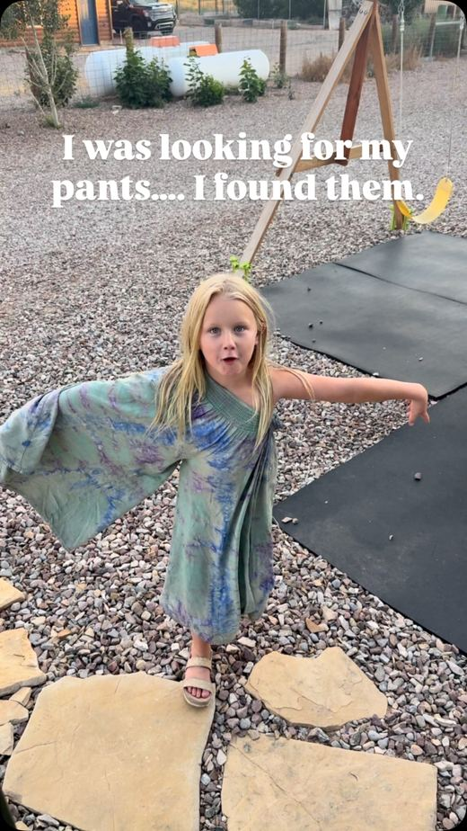
1600万回 NEWYahoo!ニュース · 16 Nov · @kirashelbyl ♥867,790
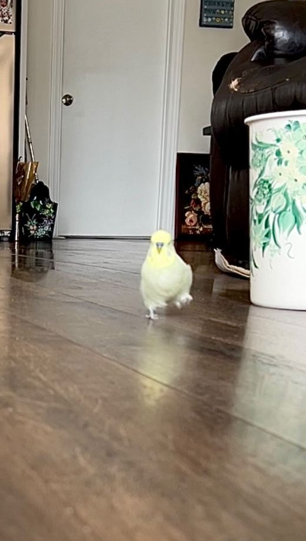
1300万回ねとらぼ · 15 Nov · @mikakanemura ♥890,653
ねとらぼ · 15 Nov · @bonbondowneyjr ♥334,155
Excite エキサイト · 16 Nov
 144万回
144万回
Excite エキサイト · 15 Nov
Unisba Media · 15 Nov
Excite エキサイト · 15 Nov
 72万回
NEW
72万回
NEW
オリコンニュース · 16 Nov · @cainz_official ♥4,531
Excite エキサイト · 15 Nov
 45万回
NEW
45万回
NEW
 23万回
23万回
ライブドアニュース · 15 Nov
 NEW
NEW
日本ネット経済新聞 · 16 Nov
宮崎日日新聞 · 15 Nov
 NEW
NEW
オリコンニュース · 16 Nov · @aya_life_gohan ♥34,060
THE ANSWER · 16 Nov
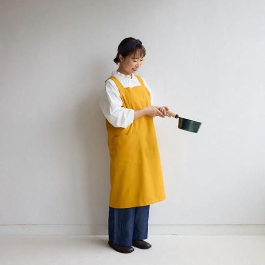
NEWTRILL · 16 Nov
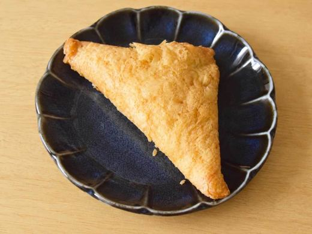
NEWTRILL · 16 Nov
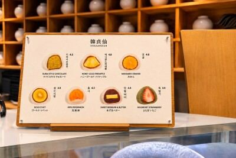
NEWニコニコニュース · 16 Nov
TRILL · 16 Nov
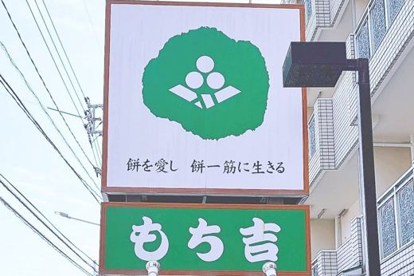
NEWBuzzFeed · 16 Nov
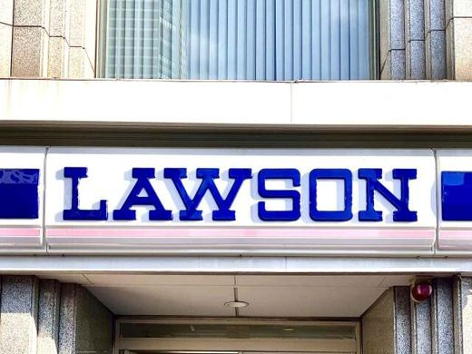
NEWｄメニューニュース · 16 Nov
Yahoo!ニュース · 14 Nov · @yucamatsu717 ♥26,322
美ST ONLINE · 16 Nov
Mantan Web · 16 Nov · @tsubasa_0627official ♥23,740
めざましmedia · 16 Nov
ニコニコニュース · 16 Nov
Yahoo!ニュース · 16 Nov
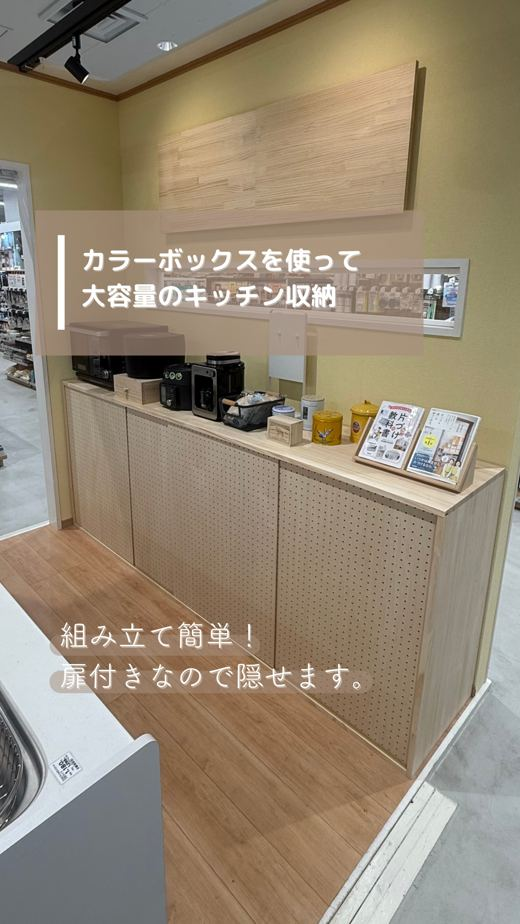
NEWExcite エキサイト · 16 Nov · @dcmdiyplace_official ♥982
TRILL · 16 Nov
ｄメニューニュース · 16 Nov
ライブドアニュース · 16 Nov
ライブドアニュース · 16 Nov
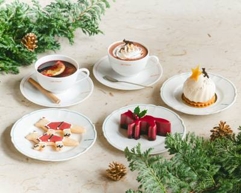
11/16 13:00 🗼 東京株式会社メゾン・キツネ・ジャパンのプレスリリース 2026年11月20日（金）よりクリスマスシーズンにぴったりな新作ドリンク＆ス
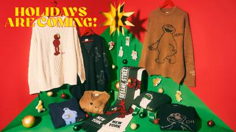
11/16 12:00 🗼 東京株式会社マッシュホールディングスのプレスリリース 毎年大人気！ホリデーシーズン限定チキンボックスの予約受付も開始〈11月19日(
株式会社カプコンのプレスリリース コラボレーションを記念して、株式会社 明治「チョコレート大作戦」の公式Xにて、キャンペーン実施
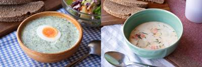
11/16 11:18 🗼 麻布ナショナル麻布株式会社のプレスリリース ナショナル麻布株式会社（本社：港区南麻布4-5-2、代表取締役社長：福村州央）は、11月
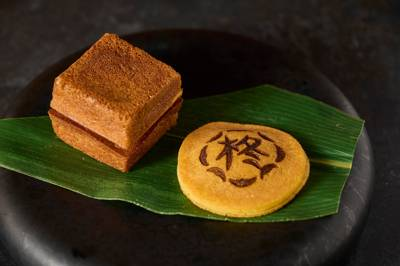
11/16 11:00 🗼 銀座株式会社ヒエロナのプレスリリース ３年の歳月を経てついに完成！老若男女に愛される銀座土産の新定番 “日本が誇る厳選スイーツを世界
株式会社ロッテのプレスリリース 12月15日（火）に全国のコンビニエンスストアで先行発売 株式会社ロッテ（東京都新宿区、代表取締
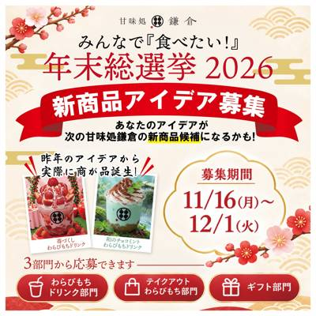
11/16 09:00 🗼 鎌倉株式会社 K&Sのプレスリリース わらびもちドリンク、テイクアウト、ギフトの3部門でアイデアを大募集。12月の一般投票で
株式会社丸亀製麺のプレスリリース 丸亀製麺新TVCM 2026年11月25日（水）より全国で放送開始 ぷりっぷりの牡蠣の旨みがつ
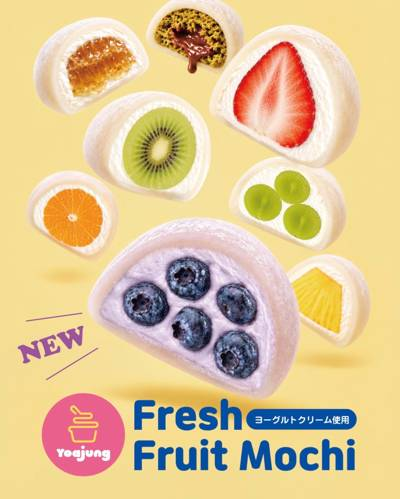
11/16 18:14 🌐 全国株式会社B.Nのプレスリリース 韓国SNSで話題の「フルーツヨーグルトもち」11月21日 全国発売 開始 株式会社YOAJUNG
株式会社ギンビスのプレスリリース ～11/23（月）より販売開始！～ 株式会社ギンビス（本社：東京都中央区、代表取締役社長：宮本
株式会社サンクゼールのプレスリリース 株式会社サンクゼール（本社：長野県飯綱町）が展開する「久世福商店」は、久世福商店店舗（一
株式会社メリーチョコレートカムパニーのプレスリリース ～2026年12月23日（水）より予約開始～ チョコレートをはじめとする贈
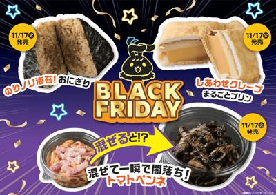
11/16 15:00 ❓ 不明キャンペーン期間：２０２６年１１月１７日（火）～１１月３０日（月） ミニストップは今年も、ブラックフライデー企画を２０２６年１１
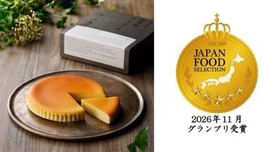
11/16 15:00 ❓ 不明株式会社庫やのプレスリリース 長年愛され続ける品質とものづくりへのこだわりが高評価 コロワイドグループのチーズガーデン（株式会
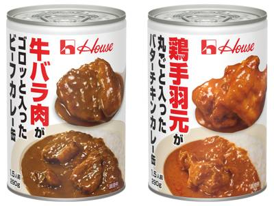
11/16 14:30 ❓ 不明ハウス食品グループ本社株式会社のプレスリリース ハウス食品株式会社は、ハウス食品初の家庭用缶詰カレー製品となる「牛バラ肉がゴロッ
ピーコック魔法瓶工業株式会社のプレスリリース お湯だけ約5分。レトルト食品を温めて、そのまま5時間あたたかく持ち運べる「レトルト
アサヒ飲料株式会社のプレスリリース 『green cola』を題材に、東京モード学園の学生がSNSクリエイティブ制作に挑戦 ア
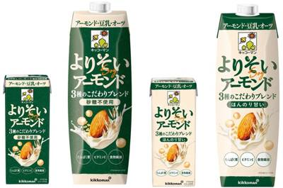
11/16 14:00 🌐 全国キッコーマンソイフーズ株式会社のプレスリリース ～アーモンドミルクを飲んでいる方にもおすすめ～ キッコーマンソイフーズ株式会社
株式会社 明治のプレスリリース 株式会社 明治（代表取締役社長：八尾 文二郎）は、濃厚なコクとなめらかな食感、さっぱりとした後
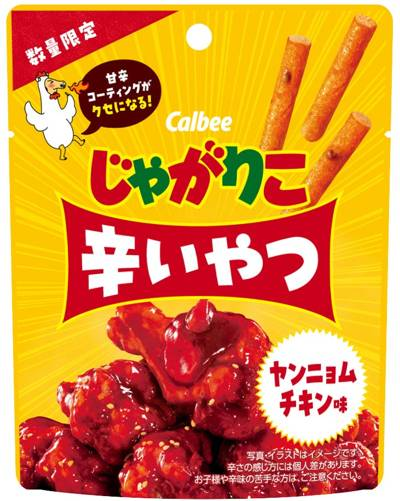
11/16 14:00 🌐 全国カルビー株式会社のプレスリリース 2026年11月23日（月）から全国のコンビニエンスストア先行で数量限定発売 カルビー株式会社
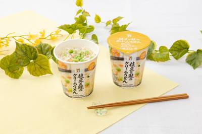
11/16 13:30 🌐 全国株式会社セブン‐イレブン・ジャパンのプレスリリース ～1食あたり238kcal、食物繊維4.5gも摂れる！11月17日（火）より
TK製薬株式会社のプレスリリース 鳴門の海水から作った、料理にそのまま使える減塩タイプ TK製薬株式会社(本社：埼玉県さいたま市
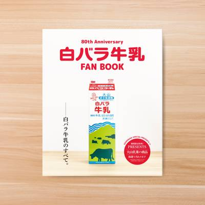
11/16 11:36 🚄 鳥取今井印刷株式会社のプレスリリース 牛乳はもちろん、乳製品やスイーツ、グッズを網羅した「白バラ牛乳」のすべてがわかる公式ファンブッ
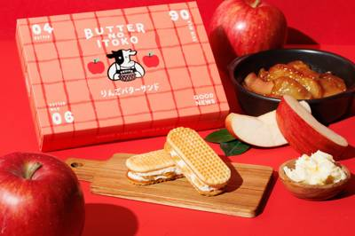
11/16 11:33 ❓ 不明株式会社GOODNEWSのプレスリリース 〜規格外のりんごを活かす「BITE BACK APPLE」とタッグ。果実の酸味とふんわ
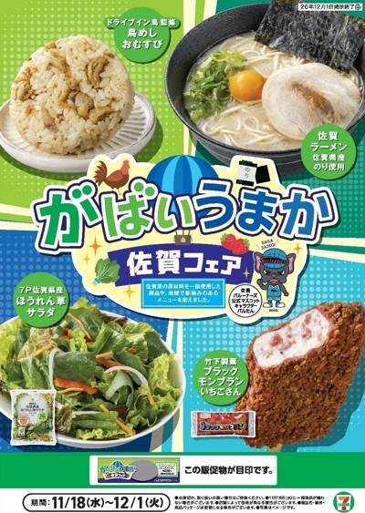
11/16 11:30 🚄 佐賀株式会社セブン‐イレブン・ジャパンのプレスリリース 11月18日（水）より12月1日（火）まで県内のセブン‐イレブンにて開催！
ペルノ・リカール・ジャパン株式会社のプレスリリース 〜日本の繊細な味覚に寄り添う、特別なシーバスリーガル〜 新TVCM「繊細な味
森永乳業株式会社のプレスリリース 森永乳業は、「ミルク生活」発売10周年記念キャンペーンを12月1日（火）より実施いたします。
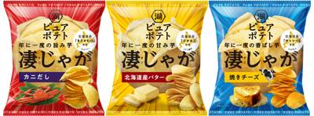
11/16 11:00 🚄 北海道株式会社湖池屋のプレスリリース 旨みが凄い「きたかむい」、甘みが凄い「ひかる」、香ばしさが凄い「サッシー」 株式会社湖池屋（社長
株式会社AlgaleXのプレスリリース 一般社団法人ごみプロジェクト代表としても活動する、お笑いコンビ「マシンガンズ」滝沢秀一氏
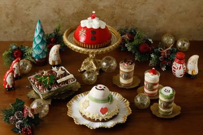
11/16 11:00 ❓ 不明株式会社シュゼット・ホールディングスのプレスリリース 贈り物にも、クリスマスの食卓にも。サンタやスノーマンが彩る限定ティラミスケ
株式会社プレナスのプレスリリース 11.17(火)～27(金) 株式会社プレナスは、定食レストラン「やよい軒」を、日本国内にて
株式会社セブン‐イレブン・ジャパンのプレスリリース ～新商品「たまごっちのチーズ肉まん」も対象！～ 株式会社セブン‐イレブン・
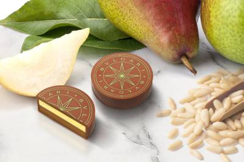
11/16 11:00 ❓ 不明ブルガリ・ジャパン合同会社のプレスリリース ～イタリア各地の四季折々を味わう、旅のようなチョコレート体験を～ 2026年冬のシー
株式会社 美十のプレスリリース 第1弾「バームクーヘン あんとバター」を2026年11月18日（水）より「PLUSTA 名古屋中
株式会社セブン‐イレブン・ジャパンのプレスリリース 株式会社セブン‐イレブン・ジャパン（東京都千代田区、代表取締役社長：阿久津
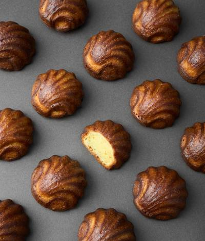
11/16 10:20 🚄 神戸株式会社キャセリンハウスのプレスリリース 11月21日（土）～11月23日（月・祝）まで期間限定販売。 アールグレイ専門店「&a
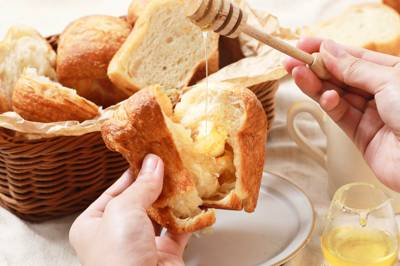
11/16 10:20 🚄 京都株式会社オールハーツ・カンパニーのプレスリリース ～関東の「グランディール」店舗限定にて2026年12月1日（火）より発売開始～
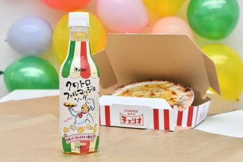
11/16 10:00 🌐 全国株式会社チェリオコーポレーションのプレスリリース 全国の一部量販店と関西、中部、沖縄エリアの一部チェリオ自動販売機で販売 株式
株式会社ほっかほっか亭総本部のプレスリリース 日替りで人気商品が登場！いつものお弁当を、大満足のボリュームでお届け！ 持ち帰り
太子食品工業株式会社のプレスリリース sial-innovation-2026-square(公式プレスキット） 太子食品工業株
サントリービバレッジ＆フード株式会社のプレスリリース 「ＢＯＳＳ×ポケモン３０周年 第３弾」ピカチュウに扮した宇宙人ジョーンズが
日本ピザハット株式会社のプレスリリース 〜2026年11月16日（月）からさらにおトクになりました！会員登録するだけで、人気ピザ
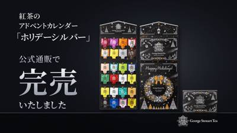
11/16 09:00 🌐 全国株式会社味とサイエンスのプレスリリース 子どもの頃のクリスマスを黒×シルバーで描いたデザインが、発売から5週間あまりで公式通販で
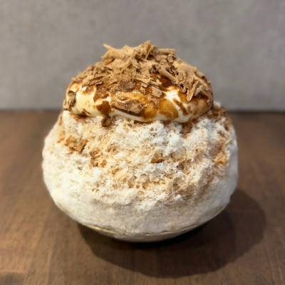
11/16 10:30 🗼 東京沖縄の黒糖を使用した新メニュー「生黒糖ミルク」が登場！ 12月13日までオープン記念価格で提供 沖縄黒糖を使用した生黒糖ミルク
ウッドデザインパーク株式会社のプレスリリース 愛知県美浜町の海が見える牡蠣小屋に新メニューが登場。ぷりっとした食感と濃厚な旨みが
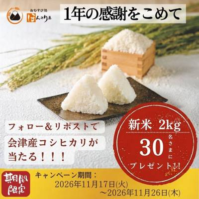
11/16 14:00 🗼 東京株式会社JR東日本クロスステーションのプレスリリース 株式会社JR東日本クロスステーション フーズカンパニー（所在地：東京都渋
株式会社モンテローザのプレスリリース 11月17日（火）・18日（水）は店内飲食のメニューが全品半額！11月19日（木）・20日
鈴廣かまぼこ株式会社のプレスリリース 鈴廣かまぼこ株式会社（神奈川県小田原市、代表取締役社長：鈴木智博、以下「鈴廣」）は、202
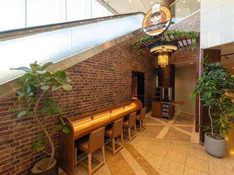
11/16 10:00 🗼 東京アパホテル株式会社のプレスリリース 日本最大級のホテルチェーンを展開するアパホテル株式会社(本社：東京都港区赤坂3丁目2‐3
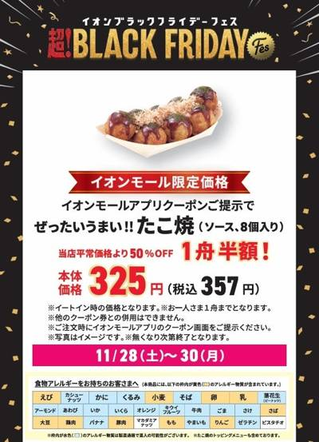
11/16 09:30 🗼 築地株式会社ホットランドホールディングスのプレスリリース ～11/20（金）より、築地銀だこ・銀のあん対象店舗で “超お得な特別企画
株式会社シン・コーポレーションのプレスリリース 株式会社シン・コーポレーション（本社：東京都港区、代表取締役社長：川口 範）が
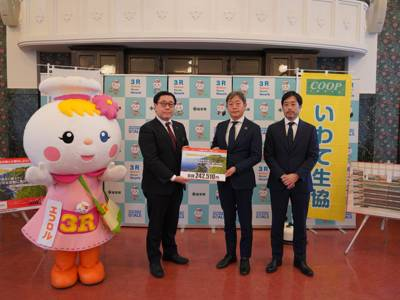
11/16 17:30 ❓ 不明みちのくコカ･コーラボトリング株式会社のプレスリリース 海ごみ対策への理解と⾏動を呼びかけるための普及啓発、河川海岸清掃を⾏う団
株式会社あみやき亭のプレスリリース 株式会社あみやき亭（本社：愛知県春日井市）は、お客様への感謝を込めて、2026年11月２４日
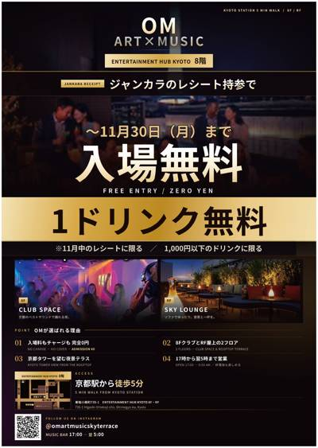
11/16 15:00 🚄 京都株式会社TOAIのプレスリリース 全国213店舗を展開し、西日本においてカラオケ業界最大規模を誇るジャンカラを運営する株式会社T
楽天グループ株式会社のプレスリリース ‐ 熊本県内店舗の販売機会を創出し、復興を継続的に支援 ‐ URL： https://ev
「Precision Fuel & Hydration」は、11月23日（月）に開催される「大田原マラソン2026」で走
GENSEN HOLDINGS株式会社のプレスリリース 公式X・Instagram計4アカウントで同時開催！ご応募いただいた方の
日本ケンタッキー・フライド・チキン株式会社のプレスリリース 【KFCにマーベル最新ヴィラン「ドクター・ドゥーム」が到来】～世界1
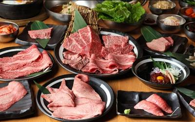
11/16 11:00 🚄 関西ハンダ株式会社のプレスリリース ～「スゴ肉×想ろい」の本格焼肉食べ放題が、新宿・歌舞伎町に登場！～ 大阪を中心に焼肉店を展開する
TPS株式会社のプレスリリース 全国50店舗体制へ拡大中！自分専用の一杯が作れるスタイルで支持される大分発の「福恩麻辣湯」が岐阜
株式会社平城苑のプレスリリース 新宿・歌舞伎町で神戸ビーフをステーキ・焼肉御膳・お重で。自社ミートセンターもハラール認証を取得
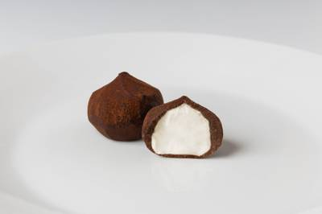
11/16 10:49 🚄 新潟株式会社雪国リゾートインフォメーションのプレスリリース 〜 南魚沼・魚沼スイーツガーデンNATURA限定。凍ったままでも、解凍し
株式会社 フジオフードグループ本社のプレスリリース 大好評コラボキャンペーンの第二弾として、全店舗でコラボドリンクバー限定ステッ
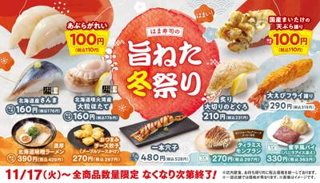
11/16 10:00 🌐 全国株式会社ゼンショーホールディングスのプレスリリース 株式会社はま寿司（代表取締役社長：南 哲史 本社：東京都港区）が展開する寿
株式会社ケイシイシイのプレスリリース 「小樽洋菓子舗ルタオ」（株式会社ケイシイシイ、本社北海道千歳市）が展開する、小樽洋菓子舗
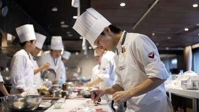
11/16 15:00 🗼 東京カリフォルニアプルーン協会のプレスリリース 東京・大阪の4キャンパスから総勢282名、38チームが参戦 2026年10月19日か
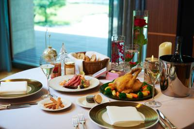
11/16 11:00 🗼 東京株式会社ニュー・オータニのプレスリリース 仕事もクリスマスも大切にしたい方へ、おうちで楽しめる「クリスマスハンパーセット」が登場
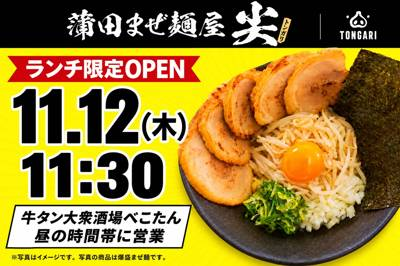
11/16 11:00 🗼 東京GYRO HOLDINGS 株式会社のプレスリリース 昼はまぜ麺専門店、夜は牛タンを楽しめる大衆酒場 Brand Bank Co
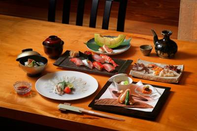
11/16 10:00 🗼 箱根ハイアット リージェンシー 箱根 リゾート＆スパのプレスリリース ～「ダイニングルーム – 鮨」で味わう、20周年を記念した特別
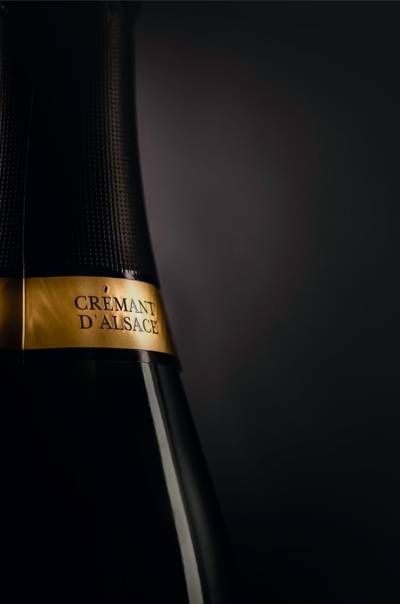
11/17 05:20 ❓ 不明アルザスワイン委員会のプレスリリース アルザスワイン×オザミワールドのコラボレーションが再び。2026年11月10日～12月10
株式会社 鶴屋吉信のプレスリリース 創業1803年の京菓子「鶴屋吉信」。５種の羊羹を食べ比べできる「抹茶一服セット」を、秋の彩り
株式会社京王プラザホテル札幌のプレスリリース 販売期間：2026年12月1日(火)～2027年3月31日(水) 「ぼく、シマエナ
 11/17 08:50
🗼 銀座
11/17 08:50
🗼 銀座
株式会社eatopiaホールディングスのプレスリリース 「ストップ」と言うまで料理が続くおまかせストップ焼肉コース 8,000円
NPO法人Wake Up Japanのプレスリリース 逗子市がフェアトレードタウンに認定されてから10年。 より多くの方にフェア
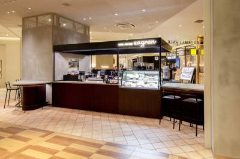
11/16 16:00 🗼 神奈川株式会社ピー・エス・コープのプレスリリース 株式会社ピー・エス・コープ（本社：神奈川県横浜市、代表取締役社長：佐々木達明）は、2
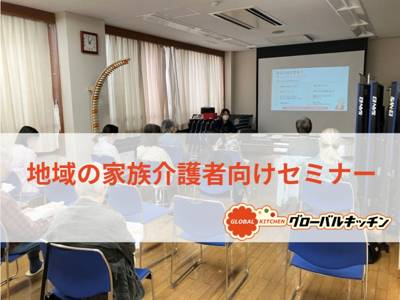
11/16 16:00 🗼 東京グローバルキッチン株式会社のプレスリリース 在宅で高齢者を支える家庭の食と栄養への関心に応え、地域の介護予防を後押しする取り組み
ヨコハマ グランド インターコンチネンタル ホテルのプレスリリース 〜夜景が煌めく特等席で過ごす大切な方とのひととき〜 ヨコハマ
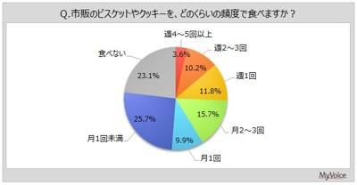
11/16 15:10 🗼 東京マイボイスコム株式会社のプレスリリース ＜＜ TOPICS ＞＞ ■市販のビスケット・クッキーを食べる人は8割弱。そのうち、直近
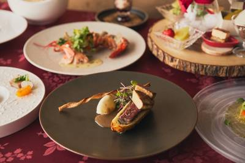
11/16 15:00 🗼 六本木シマダグループ株式会社のプレスリリース 雲丹、キャビア、フォアグラなどの厳選食材を使用。シェフ渾身の全8皿で特別な聖夜を演出しま
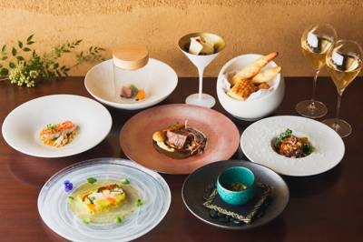
11/16 15:00 🗼 六本木シマダグループ株式会社のプレスリリース 12月は金目鯛と牛フィレ肉をお楽しみいただける全8品のフルコース。1月・2月は肉料理をメ
特定非営利活動法人GAIA.KAWASAKIのプレスリリース 11月10日より「みんなのカフェ ほかるんのおうち」プレオープン。
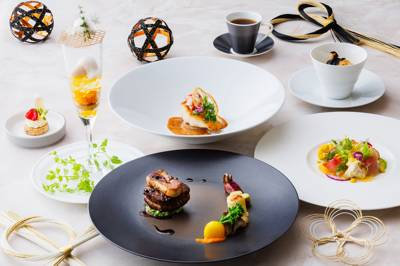
11/16 14:00 🗼 丸の内日本ホテル株式会社のプレスリリース 一年の締めくくりと新年を祝う特別コース ホテルメトロポリタン 丸の内（所在地／千代田区丸の内
コープデリ生活協同組合連合会のプレスリリース コープデリ生活協同組合連合会（本部：埼玉県さいたま市、代表理事理事長：熊﨑 伸、
株式会社フォーシーズのプレスリリース 2026年11月2日（月) マンダリン オリエンタル 東京にて 株式会社フォーシーズ（東
有限会社 二幸ホームのプレスリリース 宮前平で育った中学の同級生3人が、食事やコーヒーでひと息つける場所を地元に 2026年11
株式会社クラウドボックスのプレスリリース 最優秀賞にはギフトカード5万円分（1名）をはじめ、キッコーマングループ商品11点詰め合
株式会社マルエイフードテックのプレスリリース 2026年12月4日(金) 元祖豚丼屋TONTON 五井店オープン 株式会社マルエ
株式会社プロントコーポレーションのプレスリリース こだわりの珈琲を楽しむ、フルサービス型カフェ 株式会社プロントコーポレーション
株式会社ヨックモックのプレスリリース 12月1日（火）より予約開始 株式会社ヨックモック(本社：東京都千代田区、代表取締役社長：
株式会社WDI JAPANのプレスリリース トラディショナルなスペシャルメニューでアメリカの収穫感謝祭を楽しもう 販売期間：20
株式会社なだ万のプレスリリース 弁当・惣菜を販売する「なだ万 セレオ八王子店」を、11月26日（木）にオープンいたします。 株式
株式会社CLASSICのプレスリリース 〜締めにはMAISON CLASSIC名物のシュークリームも。〜 高輪ゲートウェイ駅南改
株式会社オークラ ニッコー ホテルマネジメントのプレスリリース 東京ベイの夜景を望むクリスマスディナーから、華やかなブッフェまで
ワタミ株式会社のプレスリリース ~主力の鶏料理銘柄鶏「清流若どり」の美味しさをさらに追求、素材と品質にこだわった新たな鶏メニュー
有限会社東亜園のプレスリリース グローバルな受賞歴がある台湾はちみつの他、全8種類の個性豊かな台湾はちみつと生ローヤルゼリーをご
Remake easy株式会社のプレスリリース 住所非公開の会員制パフェバー『Remake easy（リメイクイージー）』を運営
株式会社ケイアイコンのプレスリリース 48頭が出品した第69回共進会で最高賞。落札単価は出品牛平均の約2.7倍―松阪牛の生産技術
株式会社アブラカダブラのプレスリリース 香り高いビリヤニとコク深いカレーで、会議・ロケ・おもてなしに、ひと味違うごちそうを。ビリ
イオン株式会社のプレスリリース ～小川駅西口に、日々の食事を支える身近な中華料理店が誕生～ 中華料理店「れんげ食堂Toshu」を
株式会社そごう・西武のプレスリリース １１月２４日は「和食の日」 会期：２０２６年１１月２日（月）～１１月２４日（火）まで 会場
株式会社 船昌のプレスリリース https://dek.world 株式会社 f.dining（本社：東京都大田区、代表取締役社
株式会社マルエイフードテックのプレスリリース 2026年12月4日(金) 元祖豚丼屋TONTON 五井グランドホテル店オープン
株式会社ケイシイシイのプレスリリース 日常のひとときに、小樽から届く豊かな味わいを。看板商品「ドゥーブルフロマージュ」のとろける
株式会社丸亀製麺のプレスリリース 《鴨と牡蠣で“冬入り”、丸亀製麺は「冬のおいしさ」がつまってる！》 2026年11月25日（水
明海グループ株式会社のプレスリリース ～ご家族・ご親族で楽しめる華やかなお正月料理＆アルコール含むフリードリンク付き～ シーサイ
 11/16 20:10
🚄 京都
11/16 20:10
🚄 京都
株式会社丹友商事のプレスリリース 2026〜2027年冬季限定。鍋と寿司でぶりを味わう宮津の割烹 株式会社丹友商事が運営する「ホ
株式会社 重慶飯店のプレスリリース 株式会社重慶飯店（横浜市中区山下町185番地 代表取締役 李 宏道）が販売するオリジナル中華
株式会社ファーストイノベーションのプレスリリース 2026年のSNS調査で「自宅で家族と」が半数超。自由記述には福岡の水炊きや山
株式会社ニュー・オータニのプレスリリース 1枚￥3,500のデジタルチケットで￥4,000相当のお食事が可能に！追加料金なしの特
株式会社パソナグループのプレスリリース 淡路島の畑の中にある農家レストラン「陽・燦燦」では、淡路島の広大な大地で育った淡路鶏と、
エスアイエススターゲイトホテル株式会社のプレスリリース 魚庭（なにわ）の海の恵みを感じる会席と御膳三種をご提供 関西国際空港の対
株式会社おいもやのプレスリリース 株式会社おいもや（本社：静岡県掛川市、代表取締役：関谷夕佳）は、2026年11月19日（木）か
ベースフード株式会社のプレスリリース 完全栄養※1の主食等を開発・販売するベースフード株式会社（本社：東京都港区、代表取締役：橋
猿田彦珈琲株式会社のプレスリリース コーヒーカップをモチーフにした、冬限定のオリジナル巻き紙が登場 猿田彦珈琲株式会社（本社：渋
DotCrepeのプレスリリース 国産小麦粉の生地に、毎朝店内で泡立てたホイップクリームをころんと丸くのせたクレープ。何度でも立
ULTIMATUM株式会社のプレスリリース – 2月発表の世界ランキング24位（日本勢トップ）に続き、アジア太平洋で
株式会社丸進ホールディングスのプレスリリース 光センサーで糖度を測定・選別した有田みかんを、丸進青果の独自ブランドとして市場へ
株式会社ひらまつのプレスリリース 株式会社ひらまつ（本社：東京都渋谷区、代表取締役社長CEO：三須 和泰、以下ひらまつ）が運営す
株式会社タカノフルーツパーラーのプレスリリース 株式会社タカノフルーツパーラー（代表取締役社長 髙野吉太郎、本社 東京都新宿区）
よつ葉乳業株式会社のプレスリリース よつ葉乳業株式会社（本社：北海道札幌市、代表取締役社長：井出 元郎）は、2026年春より展
みのりみのるプロジェクトのプレスリリース ＪＡ全農は、直営飲食店舗「和牛焼肉 信州そだち」で１１月２１日（土）～１１月２３日（月
株式会社ファーマインドのプレスリリース 生産から物流まで、おいしさを支える取り組みについて、動画を含めてご紹介しています。 青果
有限会社スワンのプレスリリース 食物繊維やビタミンDなど、きのこの栄養に注目。薬膳スープと豆乳スープで味わう“赤と白のきのこ麻辣
学校法人近畿大学のプレスリリース 近大マグロ取り上げの様子 近畿大学水産研究所と近畿大学発ベンチャー企業である株式会社アーマリン
株式会社パソナグループのプレスリリース 淡路島の海辺に佇む「青海波 -SEIKAIHA-」では、2027年新春を祝う特別企画を実
株式会社ニュー･クイックのプレスリリース 2026年11月17日（火）予約受付開始2026年12月24日（木）・25日（金）販売
生活クラブ事業連合生活協同組合連合会のプレスリリース 生活クラブ事業連合生活協同組合連合会（本部：東京都新宿区、会長：柳下信宏、
一般社団法人全国清涼飲料連合会のプレスリリース 「ボトルtoボトル」比率2030年50％達成に向け、事業系ペットボトルの回収品質
日本ホテル株式会社のプレスリリース 苺の魅力を存分に味わえるフェア ホテルニューグランド（横浜市中区山下町10番地／総支配人 木
ユーアールエー株式会社のプレスリリース [淡路島熟成オニオンフェア] – [ユーアールエー株式会社]主催、[開催日程
株式会社FOOD & LIFE COMPANIESのプレスリリース スシローが厳選したこだわりのネタやサイドメニューを年
株式会社ワンダーテーブルのプレスリリース カラフルなプレゼントが彩る、ショコラとオレンジのクリスマスケーキ 株式会社ワンダーテー
株式会社原ちゃんのプレスリリース 株式会社原ちゃん（本店：東京都町田市）は、青山学院大学陸上競技部・原晋監督がプロデュースする広
株式会社松富士食品のプレスリリース 創業以来追求してきた濃厚スープと極太麺の味わいをご家庭でも。六厘舎各店・公式通販サイトで販売
江崎グリコ株式会社のプレスリリース 江崎グリコ株式会社（本社：大阪府大阪市西淀川区、代表取締役社長 江崎 悦朗）、カゴメ株式会
カゴメ株式会社のプレスリリース 江崎グリコ株式会社（大阪府大阪市西淀川区、代表取締役社長 江崎 悦朗）、カゴメ株式会社（本社：愛
株式会社ゴンチャ ジャパンのプレスリリース 12月10日（木）MAROOT 1F にオープンいたします 株式会社ゴンチャ ジャ
サンフロンティア不動産株式会社のプレスリリース ～JR豊川駅東口すぐ。「生ハムいなり寿司」やうなぎのピッツァなど豊川店オリジナル
株式会社オースタンスのプレスリリース 〜50代女性の59.9%が疲れを「常に・よく」実感、70代（30.7%）の約1.9倍〜 株
株式会社ゼンショーホールディングスのプレスリリース 株式会社すき家（代表取締役社長：笹川 直樹 本社：東京都港区）が展開する牛丼
株式会社ペンギンのプレスリリース 北海道発「ペンギンベーカリー」が連日盛況！ 株式会社ペンギン（本社：北海道札幌市、代表取締役社
株式会社ヘソホールディングスのプレスリリース 居酒屋とBARを融合した新事業「OMBLIGO（オンブリゴ）」が2026年11月2
森永乳業株式会社のプレスリリース 〜50代女性の59.9%が疲れを「常に・よく」実感、70代（30.7%）の約1.9倍〜 森永乳
株式会社ペンギンのプレスリリース 北海道発「ペンギンベーカリー」が連日盛況！ 株式会社ペンギン（本社：北海道札幌市、代表取締役社
福岡工業大学のプレスリリース ジビエ肉、実は8割以上が未利用→有益ペプチド含有の新調味料へ 福岡県醤油工業協同組合（福岡県内の8
株式会社フロジャポンのプレスリリース 〜爽やかな「秋晴れ」と「秋のバレンタイン」を掛け合わせた“秋バレ”企画！夏に好評を博した「
株式会社あみやき亭のプレスリリース 株式会社あみやき亭は、中部地区店舗で「和牛と馬肉の饗宴コース」を販売しています。黒毛和牛あみ
サッポロビール株式会社のプレスリリース サッポロビール（株）のグループ企業であるポッカサッポロフード＆ビバレッジ株式会社（代表取
福井市のプレスリリース 福井市では、2026年6月に福井市観光公式サイト「福いろ」において、「福井駅周辺にある、好きなR
株式会社GORILLA COMPANYのプレスリリース 初日のお客様わずか8名から始まった店が、"変えないこと&quo
株式会社あみやき亭のプレスリリース 株式会社あみやき亭(本社：愛知県春日井市)は、2026年11月16日(月)より、店頭・および
鹿児島堀口製茶有限会社のプレスリリース 2025年の粉末緑茶「あらびき茶」金賞に続き、2026年は日本の伝統的な「煎茶」が最高評
株式会社ONDOホールディングスのプレスリリース ゆったりとした時間を楽しみながら、いつまでも夫婦仲良く、健康長寿を願う日になれ
ＨＲＴニューオータニ株式会社のプレスリリース ニューオータニイン札幌（札幌市中央区 総支配人：佐藤 克良）では、2026年11月
株式会社紫野和久傳のプレスリリース 明治43年創業の「大徳醤油」を迎え、天然醸造の技と食の知恵にふれるワークショップ 和久傳は、
株式会社物語コーポレーションのプレスリリース 株式会社物語コーポレーション(本社:愛知県豊橋市/代表取締役社長:加藤 央之)が全
Miコーポレーション株式会社のプレスリリース 11月4日より開催中の「あつあつ海鮮祭」限定メニュー『広島県産特大牡蠣フライ』が、
株式会社さすがやのプレスリリース ～金・プラチナ・ブランド 店頭買取価格相場から最大30％アップ～ 全国で買取専門店を展開する
つるみ観光株式会社のプレスリリース フードアナリストの推薦から始まった挑戦。ホテル白菊のウェルカムラウンジで生まれた手づくりスイ
株式会社JFLAホールディングスのプレスリリース 株式会社JFLA ホールディングス（本社：東京都中央区、代表取締役社長：檜垣周
株式会社EVERY HOLDINGSのプレスリリース ～「食」を支える仕事を体験し、将来の進路を考える機会に～ 株式会社EVER
公益財団法人佐賀県産業振興機構のプレスリリース さが県産品流通デザイン公社（所在地：佐賀市、所長：石井法子）が運営する、九州佐
株式会社オフィスフェリスタのプレスリリース 海外展開に活用できる補助金・助成金と、海外展開計画におけるTableBridgeの支
株式会社ライテックのプレスリリース ライターをはじめとした喫煙具の製造販売を手掛ける株式会社ライテック（本社：東京都台東区、代表
株式会社コスモス食品のプレスリリース コスモス食品のフリーズドライスープ・おみそ汁に加え、OEM向けパウダー素材など一堂に紹介
ＵＨＡ味覚糖株式会社のプレスリリース UHA味覚糖株式会社（本社：大阪府大阪市、代表取締役：山田泰正）が、近畿大学（本部：大阪
カゴメディア株式会社のプレスリリース 軽量化が常識のイヤホンを、あえて重くした!? お菓子の再現から開封体験まで、開発チームがこ
スターバックスコーヒージャパン株式会社のプレスリリース スターバックス コーヒー ジャパン株式会社（本社：東京都品川区、代表取締
株式会社セブン‐イレブン・ジャパンのプレスリリース ～人気の「若鶏のからあげ」や「ななチキ」などが半額に！～ 株式会社セブン‐イ
とよす株式会社のプレスリリース 昨年好評につき、12月1日より数量限定で今年も登場 とよす株式会社（本社：大阪府池田市、代表取
公益財団法人佐賀県産業振興機構のプレスリリース 佐賀の県産品を大学生がデザインの力でPR！ さが県産品流通デザイン公社（所在地
道玄坂ホテルマネジメント株式会社のプレスリリース 街並みや空を望むドームで、朝食からディナー、アフタヌーンティーまで愉しめる新し
 11/16 15:30
🗼 横浜
11/16 15:30
🗼 横浜
日本フェレロ株式会社のプレスリリース フェレロ ロシェ＆クリスマス限定メッセージカードの来場者プレゼントも！ 日本フェレロ株式会
DotDeli株式会社のプレスリリース 千葉の街に、クリスマスのワクワクが大集合！ 千葉市中央公園にて、12月11日(金)～25
株式会社エイビーリールのプレスリリース お猿さんのパフォーマンス、参加無料のミニツリーづくり・焼きマシュマロ体験、キッチンカーも
公益財団法人塩事業センターのプレスリリース 2027年2月10日（水）、神奈川県小田原市で開催＜参加無料＞ 公益財団法人塩事業セ
パルシステム生活協同組合連合会のプレスリリース アンケート回答でオリジナルグッズ当たるかも？ 生活協同組合パルシステム東京（本部
公益財団法人日本離島センターのプレスリリース アイランダー２０２６ 開催 １１月２１日・２２日、全国１７０以上の島々が池袋に集結
株式会社ファッズのプレスリリース 累計販売本数3億本！名物揚げ皮串「伝串」50円！「生ビール」190円！「本物の食材」を「生活価
株式会社ＣＲＯＳＳＡＳＩＡのプレスリリース 2027年1月15日(金)～17日(日)の3日間・ららぽーと柏の葉にて開催する、参加
パルシステム生活協同組合連合会のプレスリリース 親子で楽しむ企画が多数 生活協同組合パルシステム千葉（本部：千葉県船橋市、理事長
パルシステム生活協同組合連合会のプレスリリース お米やホタテ・ハンバーグの試食など 生活協同組合パルシステム神奈川（本部：横浜市
米屋株式会社のプレスリリース ～なごみの米屋 宣伝部長・新浜レオンさんとお客様が直接触れ合える特別な一日～ 千葉県の成田山表参道
株式会社スタンドケイのプレスリリース いつもの買い物に、もうひとつの楽しみを。冬のごちそうを、みんなで囲む特別なひととき。 冬の
INVITATION (THAILAND) CO., LTD.のプレスリリース 大鷹正人駐タイ特命全権大使も出席。8年ぶりの開催
地域活性・復興支援プロジェクト「かき小屋実行委員会」のプレスリリース 全国の豊かな海で育った旨味凝縮の牡蠣をお得な価格で食べ比べ
プライマ・トレードジャパン株式会社のプレスリリース ― 世界のカカオ供給が揺らぐ今、主要産地として台頭するエクアドルから。女性の
株式会社西武・プリンスホテルズワールドワイドのプレスリリース 道内の美味しいもの再発見・新発見 新富良野プリンスホテル（所在地：
株式会社焼肉坂井ホールディングスのプレスリリース ～ 年末年始に個室でゆったりと、宴会場で大人数で、極上の味覚を ～ 海鮮問屋
株式会社丸井グループのプレスリリース 2026年11月16日（月）～12月25日（金） 株式会社丸井（本社：東京都中野区、代表取
株式会社JR東海ホテルズのプレスリリース ウェルネス朝食から、季節を味わうランチ、京風フレンチビストロ、カフェ＆バーまで。食事と
株式会社マーキュリーのプレスリリース ～自分だけのピザを作って味わう、親子で楽しむランチイベント～ 多様な人材の登用・育成を通し
エースホテル京都のプレスリリース 季節限定のクッキー缶やクリスマスマーケット、カウントダウンパーティーも登場 エースホテル京都(
UKホテルマネジメント合同会社のプレスリリース 29階 ラウンジ＆バー「ピーコック・アレー」 【2026年11月16日】ウォルド
株式会社くるめしのプレスリリース ～オフィスやイベント会場にこだわりのスイーツをお届けいたします～ 日本最大級の法人向け弁当デリ
株式会社クリエイト・レストランツ・ホールディングスのプレスリリース 株式会社クリエイトレストランツホールディングスグループ会社・
株式会社ファッズのプレスリリース 累計販売本数3億本！名物揚げ皮串「伝串」50円！「生ビール」190円！「本物の食材」を「生活価
パルシステム生活協同組合連合会のプレスリリース おにぎりとスイーツも囲んでランチ交流 生活協同組合パルシステム山梨 長野（本部：
株式会社ホライズン・ホテルズのプレスリリース 開催期間 2026年11月21日(土)～12月27日（日） 大阪ベイエリアに位置す
株式会社ポトマックのプレスリリース 「三井アウトレットパーク マリンピア神戸」にある、パティスリー＆ベーカリーレストラン「LAG
高知食糧株式会社のプレスリリース 開催日時：2026年11月13日(金)〜15日(日)の3日間 9時〜16時/場所：大旺新洋おま
株式会社永谷園のプレスリリース 〜「お茶づけ×受験」を早稲田大学広告研究会がデザインしたバッグとともに頑張る若者へエール〜 株式
株式会社 大丸松坂屋百貨店のプレスリリース ●会期：11月18日(水) → 11月30日(月) 10時～19時 ※11月24日(
株式会社雨風太陽のプレスリリース 滞在者と地域をつなぐ「関係人口案内所」と、滞在拠点・新幹線利用の費用支援を開始 「関係人口案内
株式会社ナショナルフーズのプレスリリース ～倉敷堀南店のグランドオープン1周年を記念。期間中のお食事で、2027年1月23日から
はごろもフーズ株式会社のプレスリリース 〜世界大会出場選手所属チームとの交流試合やパラスポーツ無料体験ブースを実施〜 はごろもフ
エイ・エイ・ピー・シー・ジャパン株式会社のプレスリリース ～フィリピン・セブ島への旅行が当たる豪華抽選会も実施～ 日本、大阪–ス
福岡県のプレスリリース 東京・不忍池エリアにて１８日から福岡県の自慢のグルメ、観光情報が楽しめる！ 平成25年に「福岡クリスマス
法政大学ソーシャル・イノベーションセンター（略称：SIC）は、11月17日（火）～19日（木）まで、法政大学多摩キャンパスにて学
高知県のプレスリリース 「SUPER LOCAL 高知家 NEWS」第5弾は、半世紀以上、愛される味わい。高知県民のソウルドリン
 11/16 10:00
❓ 不明
11/16 10:00
❓ 不明
サンエックス株式会社のプレスリリース ～コラボドリンクバー限定ステッカーやクリアファイルの新デザインを展開～ サンエックス株式会
株式会社UNIのプレスリリース この時期にしか味わえないクリスマスカラーを散りばめた新作ソフト2種と飲むソフトを期間限定販売！
日本伴照株式会社のプレスリリース 11月17日（火）〜23日（月・祝）の7日間、ツバメの巣を使用した美容・健康商品を展示・販売
株式会社 伝食のプレスリリース 海産物を中心とした通信販売・店頭販売・飲食・水産加工事業を手掛ける株式会社伝食（本社：福井県敦賀
諫早市商工会のプレスリリース 道の駅251いいもりじゃがーロード×諫早市商工会 諫早市商工会（所在地：長崎県諫早市）は、202
声優・斉藤朱夏さんと生徒のスペシャルステージも開催 学校法人誠恵学院・誠恵高等学校(所在地：静岡県沼津市、理事長：小野貴弘)は、
株式会社FTG Companyのプレスリリース 大阪焼肉・ホルモン ふたご 五反田東口店が、2026年11月で6周年を迎えます。
株式会社huddleのプレスリリース 茶葉の香りを、夜長の一杯に。 茶葉・茶器専門店「The Art of Tea TOKYO」
井上梅干食品株式会社のプレスリリース 「Best Fruit Liqueur（フルーツリキュール部門最高賞）」とのダブル受賞。世
鳥屋酒造株式会社のプレスリリース 酒を、酒で醸す「再醸仕込み」。木槽搾りと一年半の熟成が生む、やわらかな甘みと奥深い味わい。代表
株式会社アップライジングのプレスリリース 響3種類に、山崎・白州、イチローズモルト4種類も。1口7,980円（税込）で、憧れの一
株式会社リカーマウンテンのプレスリリース 「SUNTORY WORLD WHISKY 碧Ao」の魅力に迫るテイスティングを含んだ
株式会社おやつカンパニーのプレスリリース ３種チーズの芳醇仕立て！カリッザクッホロッの3段階の食感変化が楽しめるベビースター 株
サッポロビール株式会社のプレスリリース なめらかな味わいと芳醇な香りが特長の、少し贅沢なハイボール サッポロビール(株)は、「デ
サッポロビール株式会社のプレスリリース 2025年の有馬記念を制した「ミュージアムマイル号」と「クリスチャン・デムーロ騎手」をデ
楯の川酒造株式会社のプレスリリース ― たてにゃん×ひつじの干支ボトル、公式オンラインショップ限定1000本 ― 楯の川酒造株式
学校法人成蹊学園のプレスリリース ―成蹊大生と武蔵野市のクラフトブルワリーによる、初の試みとなる協働企画― 成蹊大学（東京都武蔵
株式会社パソナグループのプレスリリース 株式会社パソナグループ（本社：東京都千代田区、代表取締役会長CEO 若本 博隆）は、グル
株式会社ロイヤルマイルのプレスリリース スコッチ30種類の人気銘柄が集結！5,000円で2時間飲み放題！華やか・フルーティー・ス
大正製薬株式会社のプレスリリース 東京・船橋・横須賀で好評、試飲者の9割超が「自宅でも試したい」 大正製薬株式会社（本社：東京都
互恵株式会社のプレスリリース 11月19日（木）から7日間、ワインの香りに包まれる特別な入浴体験。ワインソースを使った限定グルメ
株式会社 秋田屋のプレスリリース 株式会社秋田屋（本社：愛知県名古屋市、代表取締役社長：浅野弘義）は、名古屋の食文化と日本ワイン
日本酒造組合中央会のプレスリリース －2027年は熊本・大阪の2都市で実施、11月16日より応募受付開始－ 全国約1,600の
株式会社 板前寿司ジャパンのプレスリリース Special Holiday Set おつまみからお椀までの料理にウェルカムドリン
COZENE BASE合同会社のプレスリリース ドイツ・ニュージーランド・北海道余市などのワインを中心にセレクト。初めてご来店の
株式会社農口尚彦研究所のプレスリリース 日本酒杜氏として初の「人間国宝」に。70年以上にわたり磨き続けてきた酒造りの技と、その継
キリンビール株式会社のプレスリリース 「 “いい夫婦”の日を、いい“夫婦の日”へ」 〜11月22日を、ふたりらしい「いい“夫婦の
菊水酒造株式会社のプレスリリース 新潟県産米100％で醸した季節・数量限定の純米吟醸。GI新潟認定酒 菊⽔酒造株式会社(所在地:
音源: Original audio
Five clips, five moods, one very real emotional arc. Creators title the video “5 stages of being...” (a mom, a student, a small business owner, you name it), then take us from confident and hyped to fully overwhelmed and ready to quit. It’s relatable chaos that works for pretty much any niche.
One camera spot, a bunch of looks, zero jump-scare edits. Creators lock the camera in place and use a simple movement to swap from one outfit to the next, set to Britney Spears. Chef’s kiss for fashion creators, boutiques, and any brand with a closet to flex.
音源: Original audio
The day-in-the-life timestamp trend, but make it one appointment. Instead of your whole day, take us from walking in to walking out, whether it’s a manicure, a facial, or a fresh cut. Especially great for service-based businesses, because it’s basically a satisfying behind-the-scenes in disguise.